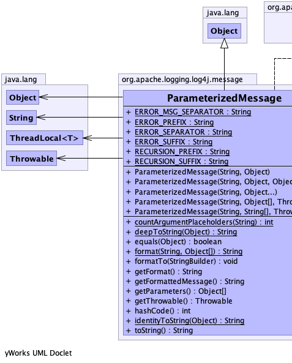
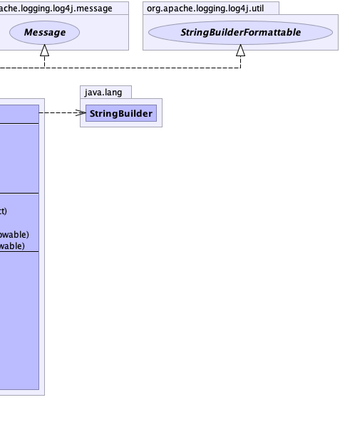

public class ParameterizedMessage extends java.lang.Object implements Message, StringBuilderFormattable
This class was originally written for Lilith by Joern Huxhorn where it is licensed under the LGPL. It has been relicensed here with his permission providing that this attribution remain.
|  |  |
| Modifier and Type | Field and Description |
|---|---|
static java.lang.String |
ERROR_MSG_SEPARATOR
Separator for error messages.
|
static java.lang.String |
ERROR_PREFIX
Prefix for errors.
|
static java.lang.String |
ERROR_SEPARATOR
Separator for errors.
|
static java.lang.String |
ERROR_SUFFIX
Suffix for errors.
|
static java.lang.String |
RECURSION_PREFIX
Prefix for recursion.
|
static java.lang.String |
RECURSION_SUFFIX
Suffix for recursion.
|
| Constructor and Description |
|---|
ParameterizedMessage(java.lang.String messagePattern,
java.lang.Object... arguments)
Constructs a ParameterizedMessage which contains the arguments converted to String as well as an optional
Throwable.
|
ParameterizedMessage(java.lang.String messagePattern,
java.lang.Object arg)
Constructor with a pattern and a single parameter.
|
ParameterizedMessage(java.lang.String messagePattern,
java.lang.Object[] arguments,
java.lang.Throwable throwable)
Creates a parameterized message.
|
ParameterizedMessage(java.lang.String messagePattern,
java.lang.Object arg0,
java.lang.Object arg1)
Constructor with a pattern and two parameters.
|
ParameterizedMessage(java.lang.String messagePattern,
java.lang.String[] arguments,
java.lang.Throwable throwable)
Deprecated.
Use constructor ParameterizedMessage(String, Object[], Throwable) instead
|
| Modifier and Type | Method and Description |
|---|---|
static int |
countArgumentPlaceholders(java.lang.String messagePattern)
Counts the number of unescaped placeholders in the given messagePattern.
|
static java.lang.String |
deepToString(java.lang.Object o)
This method performs a deep toString of the given Object.
|
boolean |
equals(java.lang.Object o) |
static java.lang.String |
format(java.lang.String messagePattern,
java.lang.Object[] arguments)
Replace placeholders in the given messagePattern with arguments.
|
void |
formatTo(java.lang.StringBuilder buffer)
Writes a text representation of this object into the specified
StringBuilder, ideally without allocating
temporary objects. |
java.lang.String |
getFormat()
Returns the message pattern.
|
java.lang.String |
getFormattedMessage()
Returns the formatted message.
|
java.lang.Object[] |
getParameters()
Returns the message parameters.
|
java.lang.Throwable |
getThrowable()
Returns the Throwable that was given as the last argument, if any.
|
int |
hashCode() |
static java.lang.String |
identityToString(java.lang.Object obj)
This method returns the same as if Object.toString() would not have been
overridden in obj.
|
java.lang.String |
toString() |
public static final java.lang.String RECURSION_PREFIX
public static final java.lang.String RECURSION_SUFFIX
public static final java.lang.String ERROR_PREFIX
public static final java.lang.String ERROR_SEPARATOR
public static final java.lang.String ERROR_MSG_SEPARATOR
public static final java.lang.String ERROR_SUFFIX
@Deprecated
public ParameterizedMessage(java.lang.String messagePattern,
java.lang.String[] arguments,
java.lang.Throwable throwable)
messagePattern - The message "format" string. This will be a String containing "{}" placeholders
where parameters should be substituted.arguments - The arguments for substitution.throwable - A Throwable.public ParameterizedMessage(java.lang.String messagePattern,
java.lang.Object[] arguments,
java.lang.Throwable throwable)
messagePattern - The message "format" string. This will be a String containing "{}" placeholders
where parameters should be substituted.arguments - The arguments for substitution.throwable - A Throwable.public ParameterizedMessage(java.lang.String messagePattern,
java.lang.Object... arguments)
If the last argument is a Throwable and is NOT used up by a placeholder in the message pattern it is returned
in getThrowable() and won't be contained in the created String[].
If it is used up getThrowable() will return null even if the last argument was a Throwable!
messagePattern - the message pattern that to be checked for placeholders.arguments - the argument array to be converted.public ParameterizedMessage(java.lang.String messagePattern,
java.lang.Object arg)
messagePattern - The message pattern.arg - The parameter.public ParameterizedMessage(java.lang.String messagePattern,
java.lang.Object arg0,
java.lang.Object arg1)
messagePattern - The message pattern.arg0 - The first parameter.arg1 - The second parameter.public java.lang.String getFormat()
public java.lang.Object[] getParameters()
getParameters in interface Messagepublic java.lang.Throwable getThrowable()
getThrowable in interface Messagepublic java.lang.String getFormattedMessage()
getFormattedMessage in interface Messagepublic void formatTo(java.lang.StringBuilder buffer)
StringBuilderFormattableStringBuilder, ideally without allocating
temporary objects.formatTo in interface StringBuilderFormattablebuffer - the StringBuilder to write intopublic static java.lang.String format(java.lang.String messagePattern,
java.lang.Object[] arguments)
messagePattern - the message pattern containing placeholders.arguments - the arguments to be used to replace placeholders.public boolean equals(java.lang.Object o)
equals in class java.lang.Objectpublic int hashCode()
hashCode in class java.lang.Objectpublic static int countArgumentPlaceholders(java.lang.String messagePattern)
messagePattern - the message pattern to be analyzed.public static java.lang.String deepToString(java.lang.Object o)
It should be noted that neither AbstractMap.toString() nor AbstractCollection.toString() implement such a behavior. They only check if the container is directly contained in itself, but not if a contained container contains the original one. Because of that, Arrays.toString(Object[]) isn't safe either. Confusing? Just read the last paragraph again and check the respective toString() implementation.
This means, in effect, that logging would produce a usable output even if an ordinary System.out.println(o) would produce a relatively hard-to-debug StackOverflowError.
o - The object.public static java.lang.String identityToString(java.lang.Object obj)
Note that this isn't 100% secure as collisions can always happen with hash codes.
Copied from Object.hashCode():
As much as is reasonably practical, the hashCode method defined by
class Object does return distinct integers for distinct
objects. (This is typically implemented by converting the internal
address of the object into an integer, but this implementation
technique is not required by the Java™ programming language.)
obj - the Object that is to be converted into an identity string.public java.lang.String toString()
toString in class java.lang.Object